灯塔下分布着废弃或仍在使用的小屋，部分住宅依靠风车供电。设计先建立地理层级，再用能源与建筑状态暗示岛上的生活痕迹。
Abandoned and functioning huts sit below the lighthouse, with some homes powered by windmills. Geography, energy and building condition establish the island's lived history.
艺术设计积累与尝试 / 2025
ART PRACTICE & EXPLORATION / 2025
从岛屿、地下室和小屋开始，延伸到角色、道具、桌游规则与植物变异世界。这不是一份按年份封存的 PDF，而是一册持续记录想法如何从草图长成视觉系统的造物笔记。
From islands, basements and cabins to characters, props, tabletop rules and a world of mutated plants. This is not a PDF frozen in time, but a living notebook of ideas becoming visual systems.
00 / MANIFESTO
本页整理自《PORTFOLIO 2025》，重新按“世界、角色与物件、系统、练习”组织。除页面中明确标注的参考资料外，概念设定、造型、建模、材质、角色与游戏系统均由吴宇艳设计并完成。
Reorganised from PORTFOLIO 2025 into worlds, characters and objects, systems, and studies. Except for clearly marked references, the concepts, forms, modelling, materials, characters and game systems were designed and produced by Yuyan Wu.
01 / 3D WORLDS
从叙事功能出发设计空间：岛屿提供完整地理结构，地下室承担剧情反转，小屋用隐藏入口连接日常与秘密。
Spaces designed through narrative function: the island forms a complete geography, the basement carries a plot turn, and the cabin connects everyday life to a hidden layer.
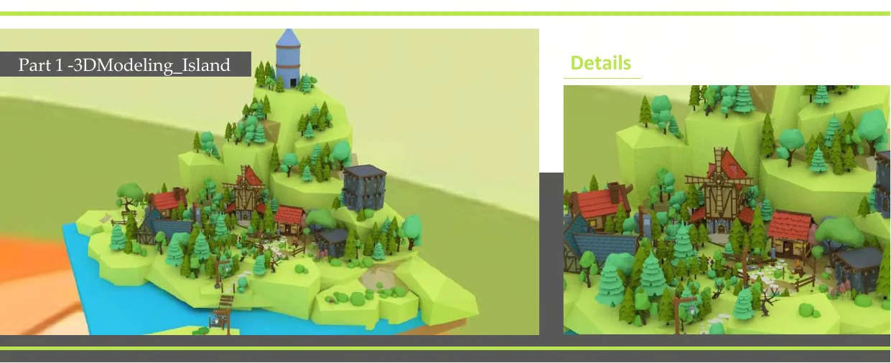
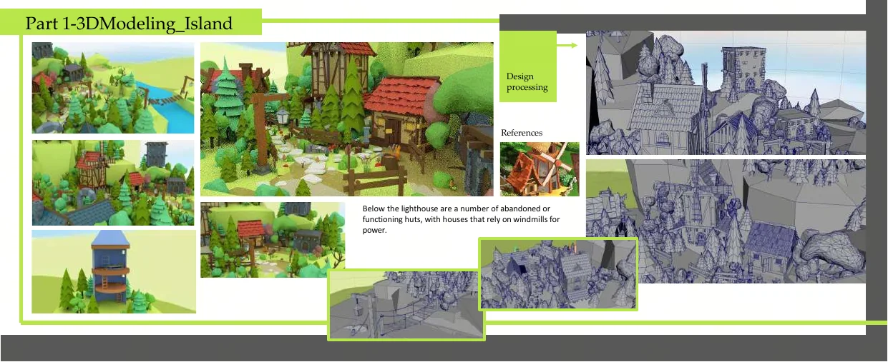
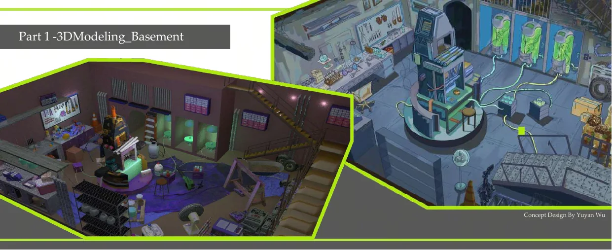
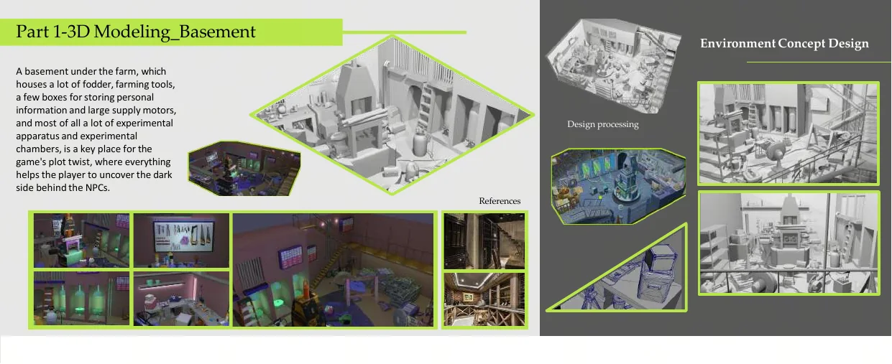
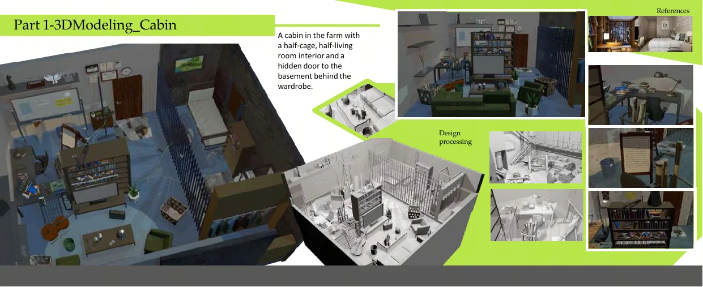
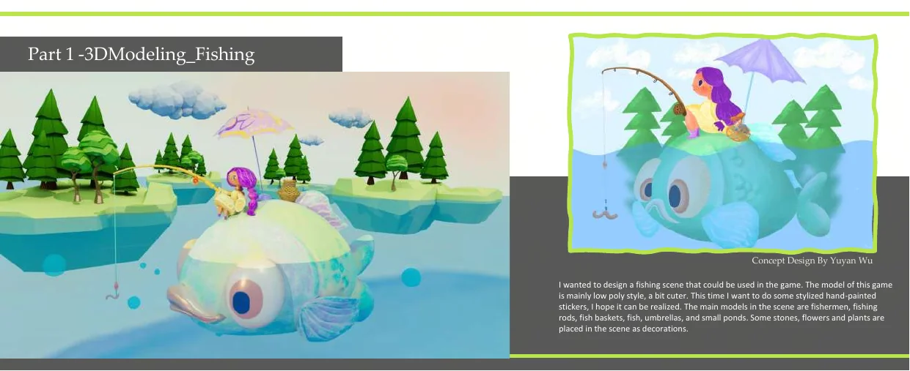
灯塔下分布着废弃或仍在使用的小屋，部分住宅依靠风车供电。设计先建立地理层级，再用能源与建筑状态暗示岛上的生活痕迹。
Abandoned and functioning huts sit below the lighthouse, with some homes powered by windmills. Geography, energy and building condition establish the island's lived history.
农场地下室存放饲料、工具、私人信息箱、供能设备和实验舱，是揭开 NPC 黑暗秘密的剧情转折空间。
Feed, tools, personal records, power equipment and experiment chambers turn the farm basement into the story's central reveal.
室内一半是笼舍、一半是生活空间，衣柜后的暗门连接地下室，让日常陈设成为隐藏叙事的入口。
Half cage and half living room, the cabin hides a basement door behind the wardrobe and turns domestic space into a narrative threshold.
以低多边形和可爱比例构建钓鱼场景，并尝试风格化手绘贴图；角色、鱼竿、鱼篓、鱼、伞和池塘共同组成完整交互情境。
A low-poly fishing scene with stylised hand-painted textures, built from the character, rod, basket, fish, umbrella, pond and environmental details.
02 / CHARACTER & OBJECTS
把二维设定推进为可使用的三维资产：从人体比例、骨骼权重到材质触感，也为鱼、伞、鱼篓、武器箱和通讯器建立一致的风格语言。
Turning 2D concepts into usable 3D assets, from anatomy, rigging and skin weights to a shared material language across fish, umbrellas, baskets, weapon cases and communicators.
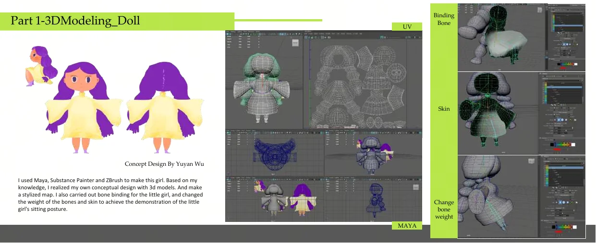
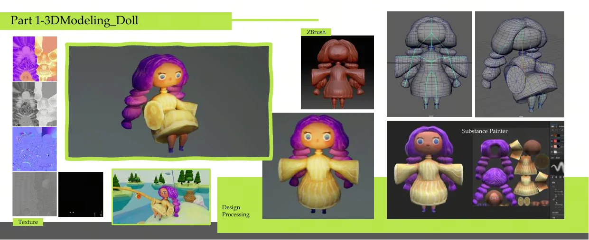
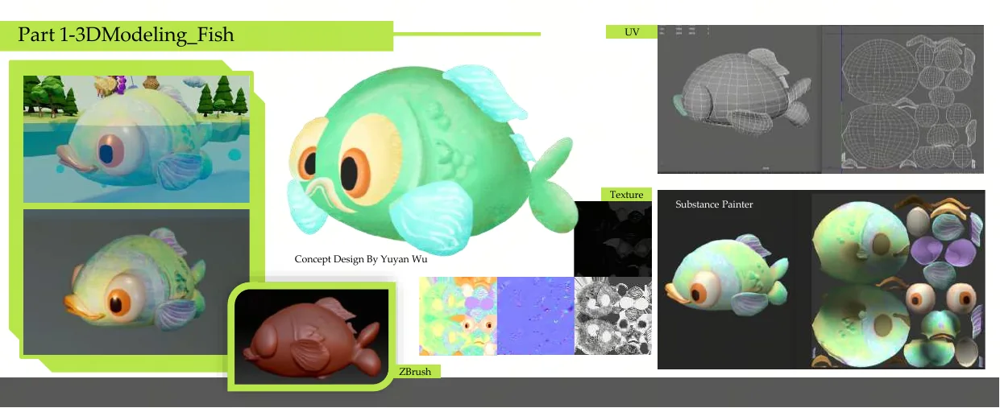
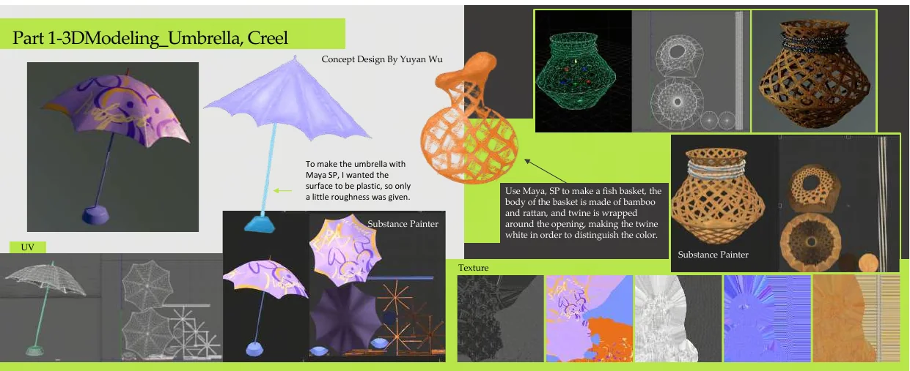
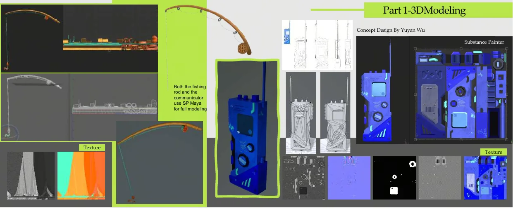
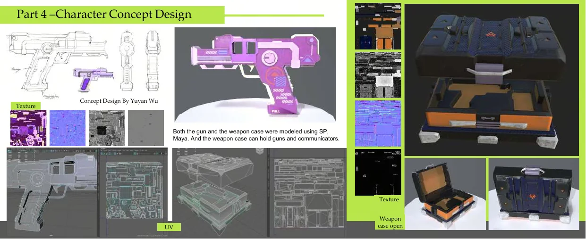
使用 Maya、Substance Painter 与 ZBrush 把二维角色设定转化为三维模型，制作风格化材质，并通过骨骼绑定与权重调整实现坐姿展示。
Maya, Substance Painter and ZBrush translate the 2D concept into a stylised 3D character, with rigging and skin weights refined for a seated pose.
雨伞以塑料触感为目标，控制表面粗糙度；鱼篓采用竹、藤和麻绳的材质对比，并以浅色绳口区分结构层次。
The umbrella targets a plastic surface through controlled roughness; bamboo, rattan and pale twine separate the creel's construction and materials.
鱼竿、通讯器、枪械与武器箱采用统一建模和材质流程，武器箱内部同时容纳枪与通讯设备，让造型与功能对应。
The rod, communicator, weapon and case share one modelling and texturing pipeline; the case interior is designed around the equipment it carries.
03 / GAME SYSTEMS
原创桌游设计，从设计到实物落地，变成可玩的纸质版桌面游戏。游戏规则围绕 2-6 人合作生存展开。视觉设计不只是卡牌外观，还包括职业技能、怪物数量、地图推进、战斗判断和测试后的规则迭代。
An original tabletop game carried from design into physical production as a playable paper-based game. Its rules centre on cooperative survival for 2-6 players, extending beyond card visuals into roles, skills, monster scaling, map progression, combat decisions and playtest iteration.
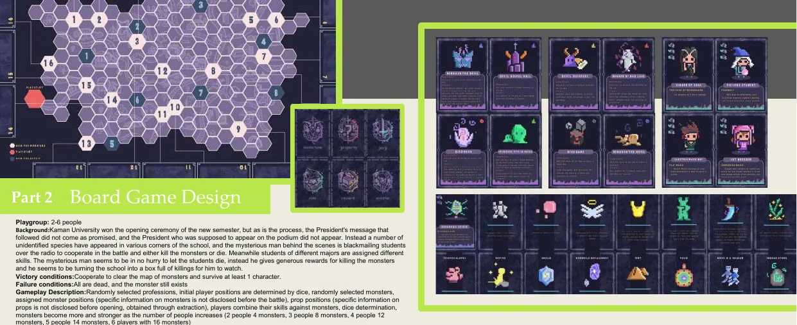
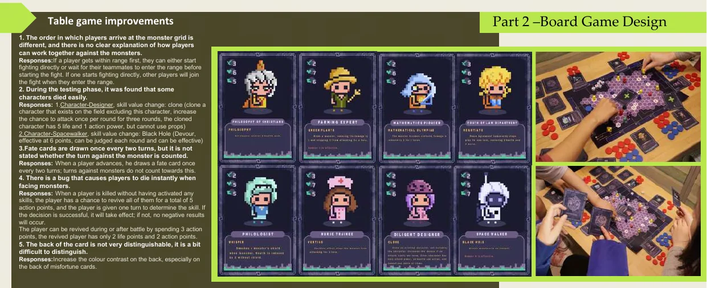
2-6 名玩家随机获得职业与初始位置，在未知怪物与道具信息下协作推进。胜利条件是清除地图怪物并至少保留一名角色；怪物数量随玩家人数增长。
Two to six players receive random roles and positions, then cooperate with hidden monster and item information. Clear the map and keep at least one character alive to win.
测试后补充多人进入战斗的顺序，调整设计师与空间行者技能，明确命运卡计时、复活规则，并提高不同卡背的色彩区分度。
Playtesting clarified group combat order, rebalanced two roles, defined fate-card timing and revival rules, and increased colour contrast between card backs.
04 / CHARACTER CONCEPT
以仙人掌、蝴蝶兰、树枝、富贵竹和岩石蘑菇为造型母题，设计突击、游击、侦察、支援与防御五个部门，并让植物特征直接转化为战斗能力。
Cactus, orchid, branch, bamboo and rock mushrooms become five divisions - assault, guerrilla, scouting, support and defence - with botanical forms translated directly into combat abilities.
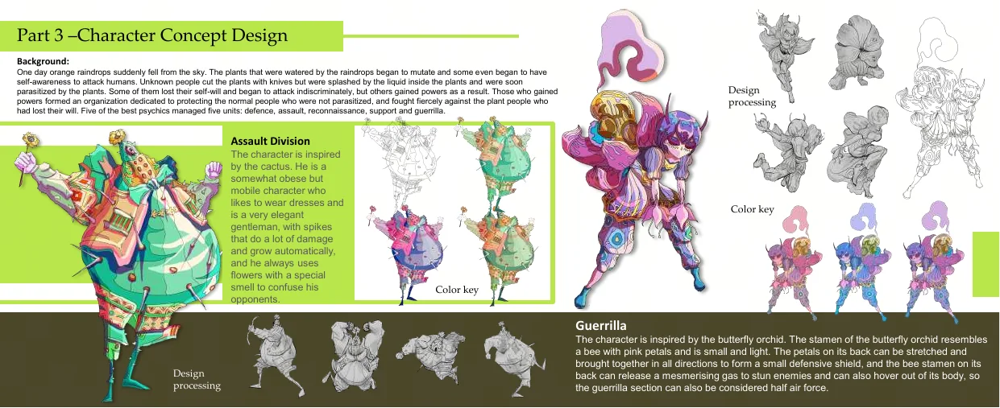
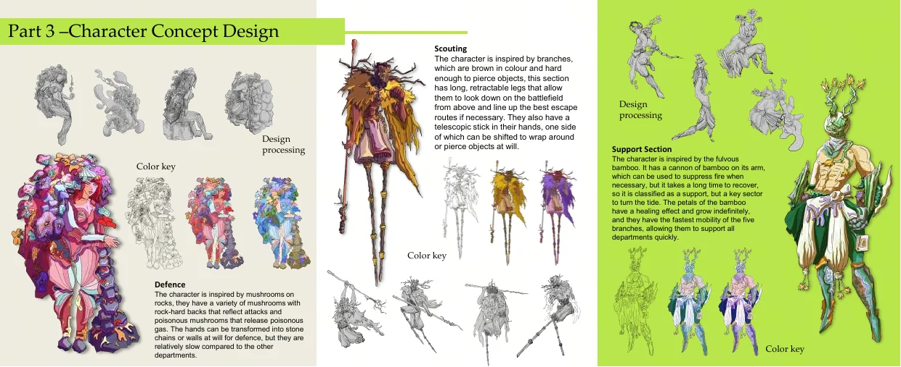
突击角色以仙人掌为原型，用尖刺和花香形成伤害与迷惑；游击角色来自蝴蝶兰，花瓣可合拢成盾，蜂状花蕊释放眩晕气体。
Cactus spikes and scented flowers define assault; orchid petals form a shield while the bee-like stamen releases a stunning gas for guerrilla play.
侦察角色用可伸缩枝条获得高处视野并规划路线；支援角色以富贵竹为灵感，结合压制火力、治愈花瓣和高速移动。
Retractable branches give scouting height and route planning; bamboo inspires support fire, healing petals and rapid movement.
防御角色结合岩石与蘑菇，使用坚硬背部反射攻击、毒蘑菇释放气体，并把双手转化为石链或墙体。
Rock and mushroom forms create reflected attacks, poisonous gas, and hands that transform into stone chains or defensive walls.
05 / STUDIES
速写、装饰画、绘画和展览记录，构成系统项目之外的感受力训练。它们不追求统一结论，而是为下一次角色、空间与叙事设计积累形状、色彩和观察。
Sketches, decorative painting and exhibition records train visual sensitivity beyond system projects, building a library of shape, colour and observation for future characters, spaces and narratives.
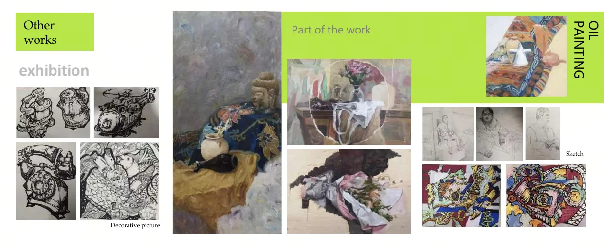